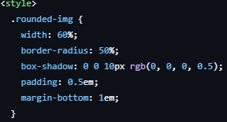
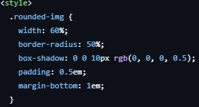

This screenshot shows the home page of my website. Here we can see a framed photo and a description of the car. The website was created about the engines of Mercedes-Benz w210 cars. At the top, you can see the “w210” logo and the ‘home’ and “engines” navigation buttons. Below the text are three hyperlinks: “Wiki” redirects to Wikipedia about the car, ‘Description’ is information from an article about the car, and the last one, “Notice Board,” is a Ukrainian marketplace where you can see such cars for sale.
Here I will show you code snippets and what they do. The development of the website began with something I liked when I was making my first website (this is already my third) using video tutorials.
 

Here you can see a round frame with shadows. It was surprisingly easy to make. On the right is a snippet of code that made it possible. It was all done thanks to the connected Bootstrap library. I wrote most of the code myself, but since it was linked to the library, it was easier to do. But my advice is that it's better to do it yourself.

These are hyperlinks that allow you to navigate to a website when clicked. Their design also depends on the connected Bootstrap library. Writing a working button is very, very easy, so you can make the entire website out of hyperlinks :)

On this picture you can see four photos with brief descriptions, as well as a hyperlink to download the photo if necessary. The photos show an image of the engine, its description and its capacity. Other photos show different types of engines depending on their power and year of manufacture. There is also a button at the bottom to download the image if necessary.
On this screenshot you see a photo card, which has a photo of the car engine, summary information and "Large photo" button. There was nothing complicated because this photo card was made by video lesson and using the library Bootstrap, but even so in writing the code did not have any problems. Next you can see the whole code